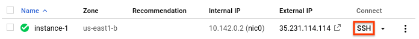

Servidor Web y su uso
Plantilla Original https://www.w3schools.com/w3css/tryw3css_templates_fashion_blog.htm
Modificada por: Erick Escamilla C.

Erick's
TECH WORLD
Servidor Web y su uso
Servidor Web y su uso feberero 08, 2022
Servidor Web y uso.
Creado por Erick Escamilla C.
¿Qué es un servidor WEB?
Con "Servidor web" podemos referirnos a hardware o software, o a ambos trabajando juntos.
- En cuanto a hardware, un servidor web es una computadora que almacena los archivos que componen un sitio web (ej. documentos HTML , imágenes, hojas de estilos CSS y archivo JavaScript) y los entrega al dispositivo del usuario final. Está conectado a internet y es accesible a través de un nombre de dominio como mozilla.org.
- En cuanto a software, un servidor web tiene muchas partes encargadas del control sobre cómo tienen acceso los usuarios a los archivos, por lo menos un servidor HTTP. Un servidor HTTP es una pieza de software que comprende URLs (direcciones web) y HTTP (el protocolo que tu navegador usa para ver las páginas web).
Al nivel más básico, siempre que un navegador necesite un archivo almacenado en un servidor web, el navegador hará una solicitud al servidor mediante la vía HTTP. Cuando la petición llega al servidor web correcto (hardware), el servidor HTTP (software) envía el archivo antes solicitado, tambien a través de HTTP.

Para publicar un sitio web, necesitarás un servidor web dinámico o estático.
Un servidor web estático, o pila, consiste en una computadora (hardware) con un servidor HTTP (software). Llamamos a este "estático" debido a que el servidor envía los archivos almacenados "tal cual" a tu navegador.
Un servidor web dinámico consiste en un servidor web estático con un software extra , lo común es que sea una aplicación servidor y una base de datos. Llamamos a esto "dinámico" por que la aplicacion servidor actualiza los archivos almacenados en la base de datos antes de enviarlos mediante el servidor HTTP.
Por ejemplo, para ver la página que ves en tu navegador finalmente, el servidor aplicación puede mostrar el diseño HTML con contenido desde una base de datos. Sitios como MDN o Wikipedia tienen cientos de páginas web, que no son realmente archivos HTML, si no una estrucura HTML asociada a una gigantesca base de datos. Esto hace mas fácil y rápido el mantenimiento y entrega del contenido.
Uso de Apache HTTP Server
Apache HTTP Server

El servidor web Apache HTTP es uno de los servidores web más antiguos y populares, lanzado en 1995. Es un software libre y de código abierto mantenido y desarrollado por la Apache Software Foundation. Según las estadísticas, alrededor del 34,1% de las aplicaciones web y los sitios web se ejecutan en el servidor web Apache. El software Apache acepta solicitudes de directorio (HTTP) de diversos usuarios de Internet y devuelve los datos solicitados en forma de archivos y páginas web.
Es uno de los servidores web más rápidos, fiables y seguros, adaptado para manejar un tráfico intenso con una configuración mínima. El software está escrito en lenguaje C y es compatible con cualquier sistema operativo como Linux, Apache Windows, Novell Netware, Mac OS X, Solaris, OS/2, Unix-like, FreeBSD, etc. El software Apache comparte la información solicitada desde el servidor al cliente a través del protocolo HTTP.
La infraestructura de código abierto ayuda a los desarrolladores a ver y colaborar con el código fuente. Además, hay un montón de módulos de Apache que ayudan a los administradores del servidor a ampliar sus características, activar y desactivar las funcionalidades adicionales. Para la configuración de estos módulos, se requiere acceso a .htaccess. mod_fcgid, mod_ftp, mod_domain, mod_mbox, mod_pop3, mod_arm4, mod_smtpd, Sandbox son algunos de los módulos de Apache HTTP Server. El software también incluye funciones adicionales en módulos de extensión externos como mod_gzip. Este módulo puede ayudar a reducir el tamaño de las páginas web que se sirven a través de HTTP. Del mismo modo, ModSecurity, otro módulo, ayuda a gestionar la detección de intrusiones para las aplicaciones web.
Características clave
- Fácil de configurar
- Rápido y seguro
- Escrito en el lenguaje C
- Su estructura modular lo hace más flexible
- Compatible con cualquier lenguaje de programación, incluyendo PHP, Python, etc.
Cómo configurar el servidor web Apache + MySQL (LAMP Stack) en Linux en GCP
Para configurar e instalar el Servidor Web Apache con la Pila LAMP en cualquiera de las plataformas en la nube, la forma recomendada es utilizar la imagen disponible en el mercado de la nube. Viene preconfigurada con la pila LAMP completa: servidor web Apache, servidor MySQL, PHP, PHPMyadmin y Let's Encrypt.
Desplegar Apache en Ubuntu Server 20.04 LTS
El Servidor Web Apache viene preinstalado con toda la pila LAMP (Servidor Web Apache, PHP, MySQL, PHPMyadmin) en Ubuntu Server.
Este servidor web Apache también viene preinstalado con phpMyadmin, lo que le permite administrar sus bases de datos a través de una interfaz gráfica de usuario (gestión de bases de datos, tablas, columnas, relaciones, índices, usuarios, permisos, etc).
El servidor web Apache viene preinstalado con los módulos Apache - Mod_wsgi y Mod_Security y varias extensiones PHP.
¿Cómo conectarse a una MV Linux en GCP?
En este documento, se describe cómo conectarse a instancias de máquina virtual (VM) de Linux con Google Cloud Console y la herramienta de línea de comandos de gcloud. Para obtener información sobre cómo funcionan las conexiones SSH en Compute Engine, incluida la configuración y el almacenamiento de claves SSH, consulta Conexiones SSH a VM de Linux.
Para conocer otras formas de conectarte a las VM de Linux, como el uso de herramientas de terceros, incluida PuTTY, consulta Conéctate a VM mediante métodos avanzados.
Antes de comenzar
-
Si deseas usar los ejemplos de línea de comandos en esta guía, haz lo siguiente:
- Instala la herramienta de línea de comandos de gcloud o actualízala a la última versión.
- Configura una región y una zona predeterminadas.
Conéctate a las VM
Para conectarte a instancias de Linux mediante Google Cloud Console completa los siguientes pasos.
-
En Cloud Console, ve a la página Instancias de VM.
-
En la lista de instancias de máquinas virtuales, haz clic en SSH en la fila de la instancia a la que deseas conectarte.

Erick Escamilla Charco
Ingeniero en Sistemas Computacionales, apasionado por la tecnología. Deasrrollador Web Full-Stack por ocupación e inquisidor por convicción.
Publicaciones populares
-
 UI/UX
UI/UX
Explore las diferencias entre User Interface y User eXperience. -
 Django: tutorial para principiantes
Django: tutorial para principiantes
Descubra uno de los frameworks más populares para desarrollo Web en Python. -
 Hacking ético con Kali Linux
Hacking ético con Kali Linux
Tome una breve introducción al uso de herramientas de audotoría informática con Kali. -
Spring Boot
Descubra un de los frameworks más populares para desarrollo Back-end con Java EE.
Tags
Desarrollo Web Front-end Back-end SSH SSL HTTP HTTPS AWS Azure GCP Load-balancing Jboss EAP Java EE Spring Boot
Inspiración


Sígueme
Suscribirse
Ingrese su e-mail y reciba las últimas noticias.